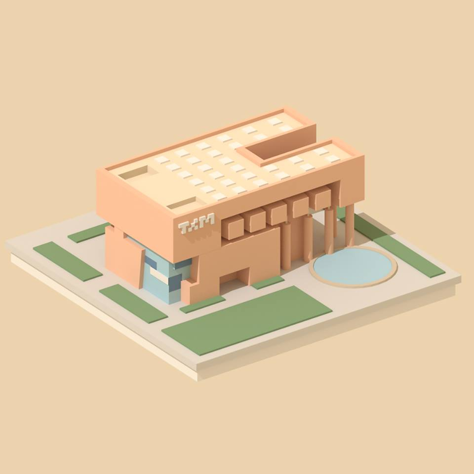

换届选举
Committee Election
（以下为理事会换届选举参考流程）
校友会计划在十一月份举办会员大会（AGM），欢迎各位校友参加！
会员大会举办时间为 xx 月 xx 日（周六）10:30 至 12:00，地点在 xxxxxxx，交通方便，具体地址另行通知。校友会提供零食与饮品。
会员大会的议题有二，第一为理事会工作报告，会长汇报本年度校友会工作，财务员公示财务报告（注释 1）。第二为新一届理事会选举（注释 2）。本届会员大会与以往流程类似，但增加选举下届理事会的议程。根据校友会章程和往年经验，下届理事会成员人数为 10 人。
投票资格
1，凡是墨尔本清华校友会"注册会员"皆有投票权，具体要求见注释 3。2，"注册会员"须为校友会登记在册之会员，尚未登记的校友，请在下面链接中（注释 4）检查并更新你的注册信息。
投票流程
1，"注册会员"身份确认。校友须确认"注册会员"身份，确认自己有投票权与被投票权。2，"理事会候选人"提名。"注册校友"可以推举他人或自荐成为"2018-2019 理事会"候选人。3，"投票系统"制作。选举执行人制作投票系统（制作人：陈建，监督人：李健民及其他想要监督投票系统运作的校友）。4，会员大会召开与投票。"注册校友"通过投票系统在线投票。5，公布结果。大会现场公布投票结果，确定理事会名单。6，理事会会议。新一届理事会成立后，推举并协商产生新一届校友会会长、副会长、秘书长及财务等。
候选人登记
候选人他荐或自荐后，将会收到登记表格，提供如下信息以供理事会审核。1，提供照片一份；2，简短介绍：介绍自己在清华的求学经历，在墨尔本的经历以及为墨尔本校友服务的计划。
